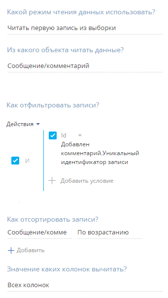
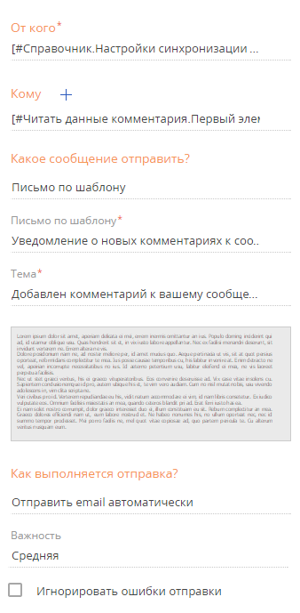

Общая схема бизнес-процесса (Рис. 1):
-
Входящий сигнал по добавлению комментария к сообщению — добавление нового комментария активирует сигнал и запускается бизнес-процесс.
-
Чтение Id добавленного комментария — чтение данных нового комментария для использования в шаблоне email-сообщения.
-
Чтение родительского сообщения — чтение данных основного сообщения для использования в шаблоне email-сообщения.
-
Отправка email — отправка контакту уведомления с заданным текстом и данными нового комментария.
Для настройки:
- Поместите на схему элемент Сигнал группы Начальные события — “Добавлен комментарий”. Элемент будет активироваться при добавлении комментария к сообщению в ленте.
- Настройте параметры сигнала (Рис. 2):
Рис. 2 — Свойства элемента “Добавлен комментарий”

- В поле Объект укажите “Сообщение/комментарий”.
- В поле Какое событие должно произойти выберите “Добавление записи”.
- В области Добавленная запись должна соответствовать условиям настройте фильтр “Родительское сообщение заполнено”.
- Добавьте два элемента Читать данные группы Действия системы.
- Элемент “Читать данные комментария” будет выполнять чтение данных добавленной записи в ленте. Настройте параметры элемента (Рис. 3):
-
В поле Какой режим чтения данных использовать? укажите “Читать первую запись из выборки”.
-
В поле Из какого объекта читать данные? укажите “Сообщение/комментарий”.
-
В области Как отфильтровать записи? настройте фильтр “Id = Добавлен комментарий. Уникальный идентификатор записи”. Для этого нажмите на <Добавить условие>, выберите колонку “Id”, затем в появившемся меню выберите Сравнить с параметром. В открывшемся окне выберите параметр ID связанной записи элемента “Добавлен комментарий”.
-
В поле Значение каких колонок вычитать? выберите “Всех колонок”.
Рис. 3 — Свойства элемента “Читать данные комментария”
-
- Элемент “Читать основное сообщение” будет выполнять чтение данных сообщения, к которому был добавлен комментарий. Настройте параметры элемента (Рис. 4):
-
В поле Какой режим чтения данных использовать? укажите “Читать первую запись из выборки”.
-
В поле Из какого объекта читать данные? укажите “Сообщение/комментарий”.
-
В области Как отфильтровать записи? настройте фильтр “Id = Читать данные комментария.Первый элемент результирующей коллекции.Родительское сообщение”. Для этого нажмите на <Добавить условие>, выберите колонку “Id”, затем в появившемся меню выберите Сравнить с параметром. В открывшемся окне определения значения параметра выберите параметр Родительское сообщение элемента “Читать данные комментария”.
-
В поле Значение каких колонок вычитать? выберите “Всех колонок”.
Рис. 4 — Свойства элемента “Читать основное сообщение”
-
- Элемент “Читать данные комментария” будет выполнять чтение данных добавленной записи в ленте. Настройте параметры элемента (Рис. 3):
- Добавьте элемент “Отправить email” группы Действия пользователя, для которого установите параметры (Рис. 5):
-
В поле От кого укажите email-адрес, с которого отправляется сообщение. Для этого в меню значений параметра выберите Значение справочника, а затем в справочнике Настройки синхронизации с почтовым ящиком выберите одну из настроенных учетных записей почты.
-
В поле Кому укажите email, на который необходимо отправить сообщение. В меню значений параметра выберите пункт Контакт, в нем — Параметр процесса, в окне выбора выделите элемент “Читать основное сообщение” и в области Параметры элемента выберите Контакт.
-
В поле Какое сообщение отправить укажите “Письмо по шаблону”.
-
В появившемся поле Письмо по шаблону выберите преднастроенный шаблон уведомления. Поле Тема заполнится автоматически.
-
В поле Как выполняется отправка выберите “Отправить email автоматически”.
Рис. 5 — Свойства элемента “Отправить email”
-
- После создания элементов процесса соедините каждый элемент со следующим с помощью элемента в правом верхнем углу выделенного элемента процесса.
- Сохраните созданный бизнес-процесс.
В результате будет создан бизнес-процесс, по которому при добавлении нового комментария к сообщению в ленте автору этого сообщения отправляется email.